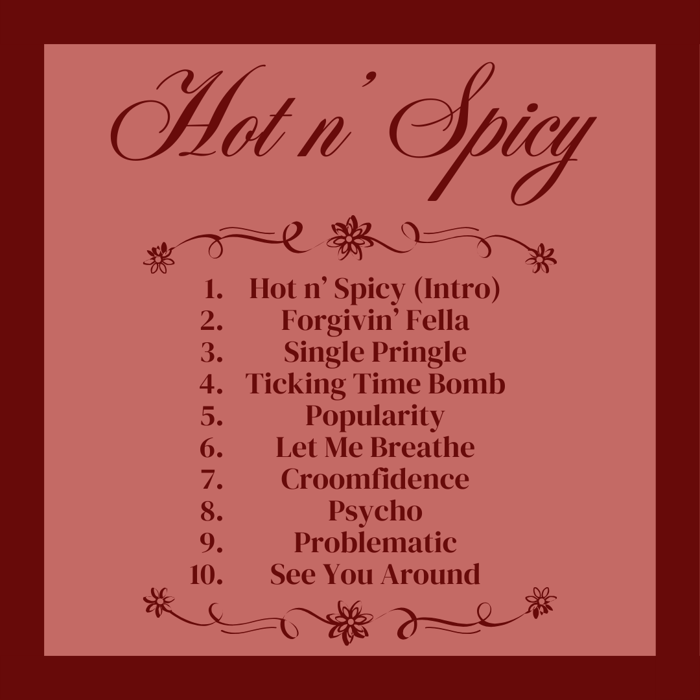

Updates
17th of January, 2025.
Aston releases his 5th Ola Album "Hot n' Spicy" with 10 Tracks.

16th of January, 2025.
Aston announces 2 vinyl variants for "Hot n' Spicy": 1 Standard Pressing and 1 Croomfie Records Exclusive Pressing.
The latter, which includes a bonus track called "Best Friends", will be released on January 20th, 12:00AM NZT.
He is expected to announce 2 more vinyl variants for the album, for a total of 4.
16th of January, 2025.
Aston announces that the third single from "Hot n' Spicy" is "Single Pringle".
10th of January, 2025.
Aston announces the tracklist for "Hot n' Spicy", with 10 tracks.

5th of January, 2025.
Aston releases "Problematic", the second single from his upcoming 5th Ola Album "Hot n' Spicy".
21st of December, 2024.
Aston announces "Hot n' Spicy", his upcoming 5th Ola Album, set for release on January 17th, 2025.
21st of December, 2024.
Aston releases "Let Me Breathe", the lead single off his 5th Ola Album.
My Albums